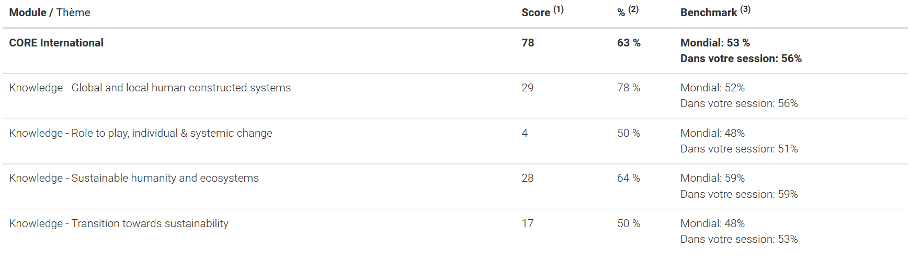
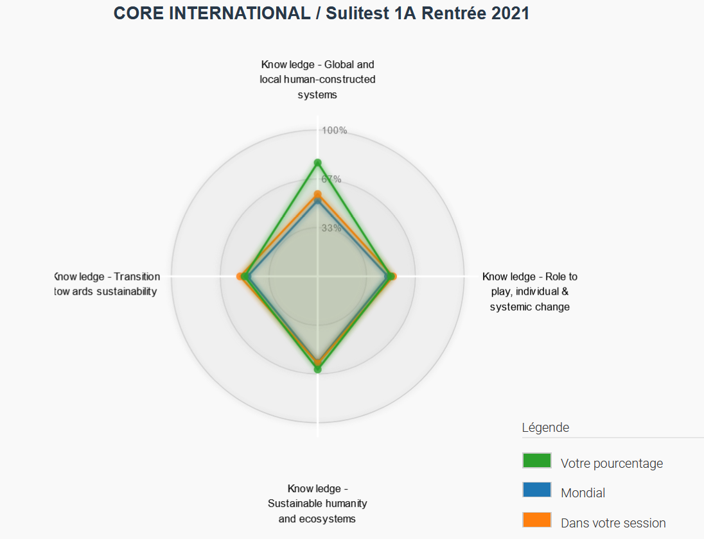
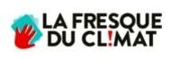
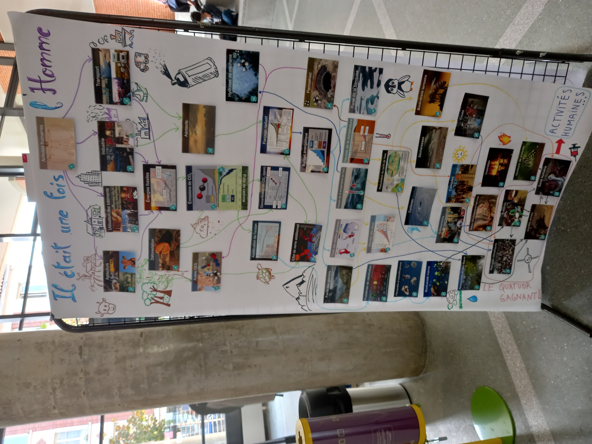
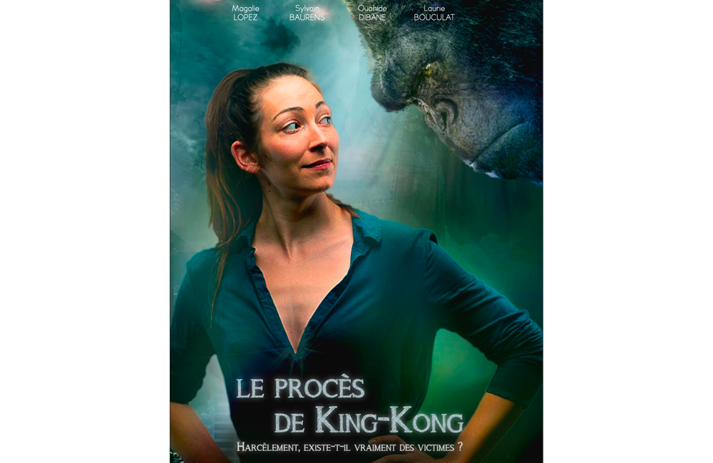
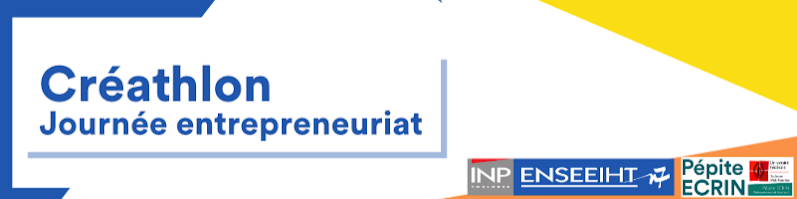
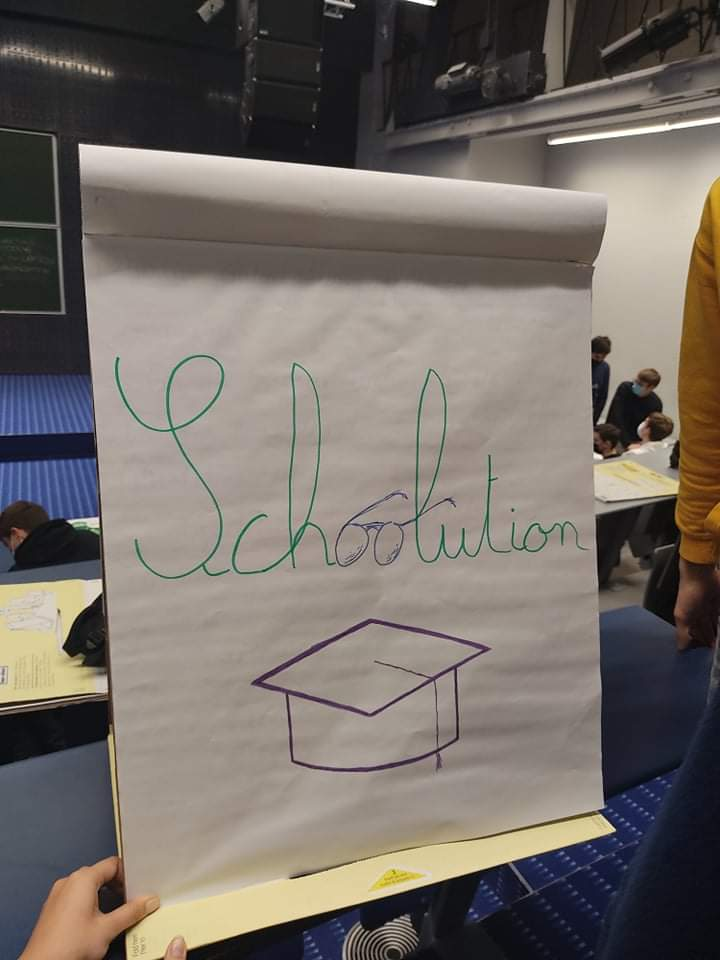

Sustainability & Civic Engagement
Sulitest: Results
 The Climate Fresk
 The Climate Fresk was an opportunity offered by ENSEEIHT to review all the world issues due to the human activities and their environmental impacts through a playful way. As a team, we had to link factors of world issues to see how the global environmental world works, and then, we talked about it and solutions that we had. I was totally involved in it, but I felt apathetic because of the fact that I already knew my responsibilities and all those issues concerning the future.
<<Le procès de King-Kong>> (2021/10/22)
a French play against harassment
“Le procès de King-Kong” was an interactive play about harassment divided into 3 parts, 3 French engineering school integration parties that have occurred. It was led by Ouahide Dibane, a former judge, taking the neutral party and performed by 3 actors Magalie Lopez, Sylvain Baurens and Laurie Bouculat. The leader has regularly stopped the play to ask the crowd opinion about the events shown. That play raised different points concerning harassment, firstly we talked about social pressure that can cover those kind of events and create some issues such as alcoholism, crazy challenges, cultural integration and threats of exclusion, and that we need to fight against. And then, we talked about sexual harassment and rape from the men, wondering if women should avoid some clothes or control better the signs that they emit because of men and their interpretations, answering simply by the equality between men and women, and saying that women are free to do whatever they want and the interpretation is always false if there isn’t any confirmation following coming from the woman.
Creathlon Day
 I was sick that day, having had all four of my wisdom teeth removed the day before. But I decided to attend the end of the day. I saw some great ideas from my teammates with their « Schoolution » and the other teams. It was amazing. Many of them seemed realistic. For example, my team’s idea was to rethink the way we learn in a more work-based approach. It was based on the idea that some students were unhappy with their schooling. And the proposed « schoolution » was to create a platform explaining the paths to different jobs and to set up a follow-up of the students (investment of the company that would host them).